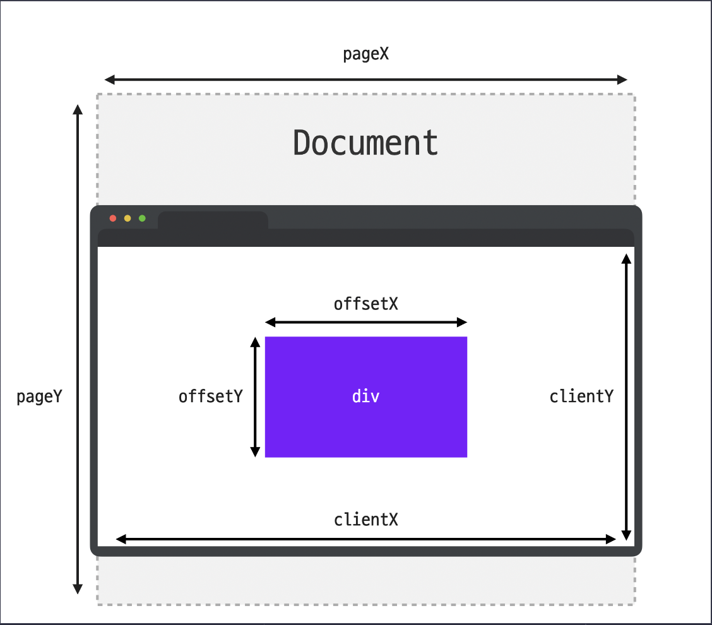

1. clientX, clientY
client 프로퍼티는 말 그대로 클라이언트 영역 내에서 마우스의 좌표 정보를 담고있는데요. 클라이언트 영역이란 이벤트가 발생한 순간에 브라우저가 콘텐츠를 표시할 수 있는 영역을 뜻합니다.
clientX : 브라우저가 표시하는 화면 내에서 마우스의 X좌표 위치를 담고 있습니다.
clientY : 브라우저가 표시하는 화면 내에서 마우스의 Y좌표 위치를 담고 있습니다.
client 값은 그 순간 보여지는 화면을 기준으로 계산하기 때문에 스크롤 위치와는 무관하게 항상 보여지는 화면의 좌측 상단의 모서리 위치를 (0, 0)으로 계산합니다.
2. offsetX, offsetY
offset 프로퍼티는 이벤트가 발생한 target이 기준이 됩니다.
offsetX : 이벤트가 발생한 target 내에서 마우스의 X좌표 위치를 담고 있습니다.
offsetY : 이벤트가 발생한 target 내에서 마우스의 Y좌표 위치를 담고 있습니다.
offset 값도 이벤트가 발생한 대상을 기준으로 계산하기 때문에 스크롤 위치와는 무관하게 항상 대상의 좌측 상단의 모서리 위치를 (0, 0)으로 계산합니다.
3. pageX, pageY
page 프로퍼티는 전체 문서를 기준으로 마우스 좌표 정보를 담고 있습니다. 그렇기 때문에 스크롤로 인해서 보이지 않게된 화면의 영역까지 포함해서 측정한다는 점이 앞의 두 프로퍼티와의 차이점 입니다.
pageX : 전체 문서 내에서 마우스의 X좌표 위치를 담고 있습니다.
pageY : 전체 문서 내에서 마우스의 Y좌표 위치를 담고 있습니다.
자칫 client 값과 혼동하기 쉬우니 잘 구분해 두시는 것이 좋습니다.
그림을 설명
